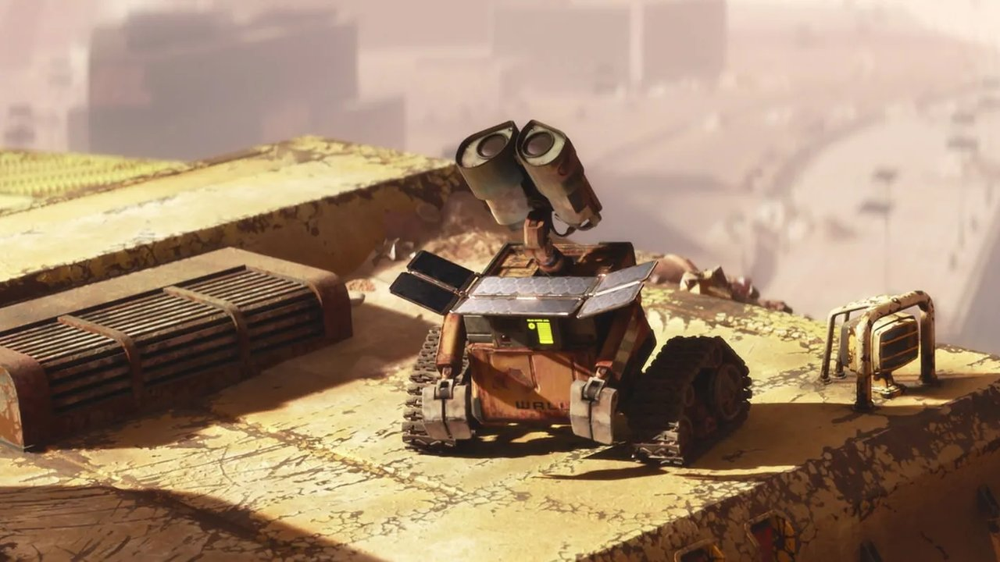
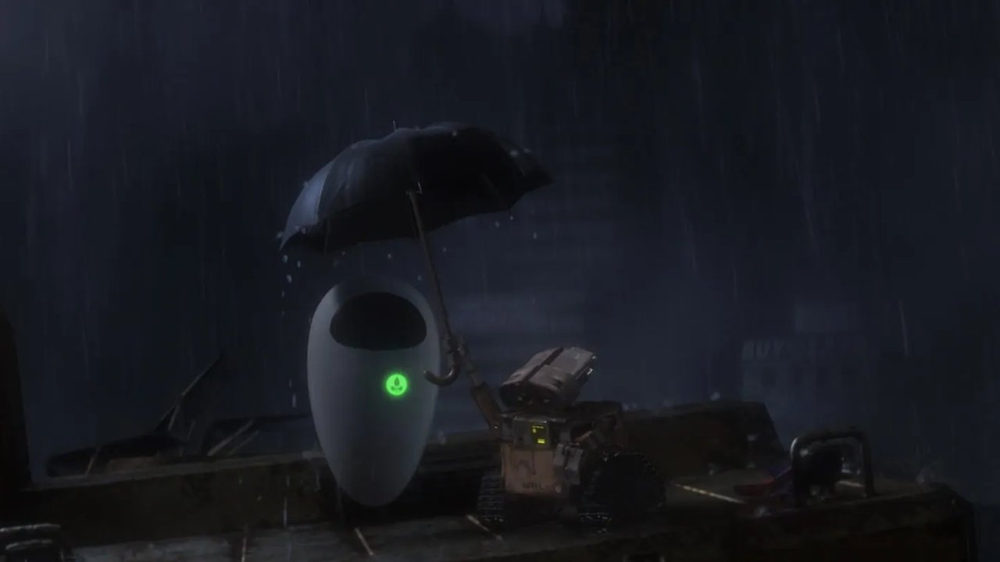
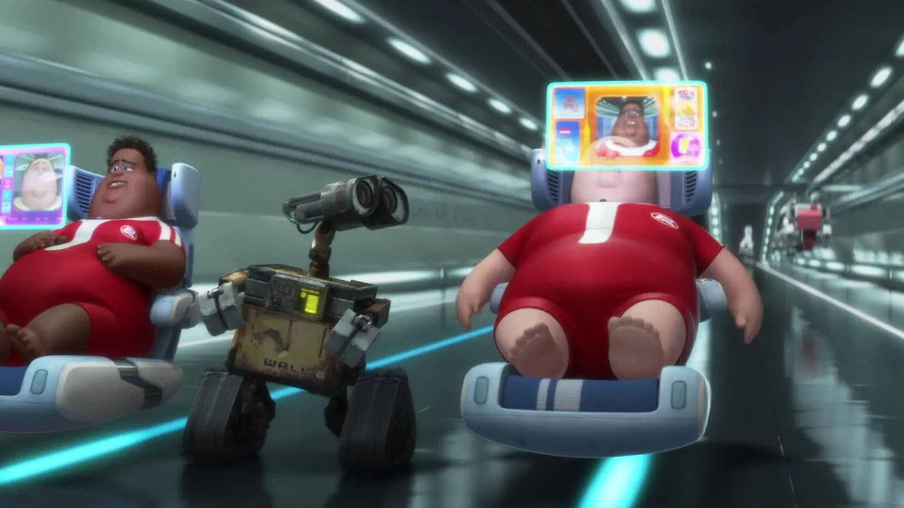
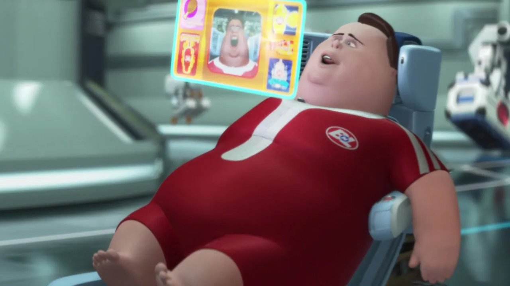
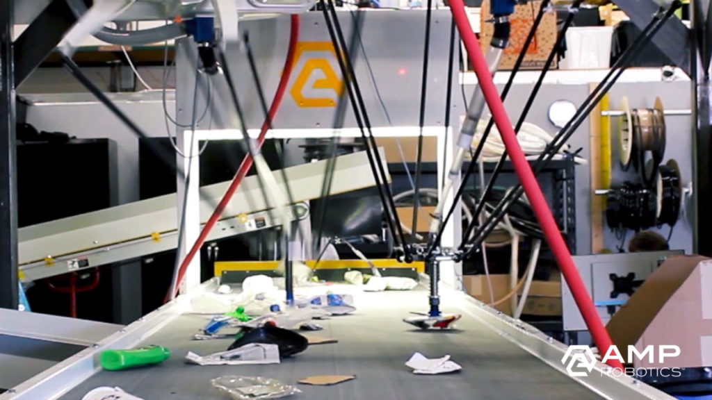

Technology Inventory
Technology, defined by Agar (2020, reviewing Schatzberg, 2018) as a "designed, material means to an end" that intervenes across scales — translating human-scale intention into large-scale consequence — is present throughout every frame of WALL·E. Stanton's (2008) world is a museum of technological consequence: machines that outlasted their designers, systems that continued executing their directives long after those directives became catastrophic. The inventory below catalogues every distinct technological class visible in the film.
Focal Technology Declaration
Autonomous Waste-Compaction Robotic Units — the WALL·E unit class
Designation: Waste Allocation Load Lifter — Earth class (WALL·E)
From the eleven technology classes mapped above, the WALL·E autonomous waste-compaction unit is selected as the focal technology. This choice is intentional and academically defensible on the grounds of granularity. The WALL·E unit is not simply a robot: it is a specific class of task-constrained, ground-based, semi-autonomous, solar-powered, optically-guided compaction machine with emergent behavioural properties developed over centuries of unsupervised operation.
The selection is further justified by narrative centrality: the WALL·E unit is the protagonist of the entire film, appearing in virtually every scene and driving every major plot event. No other technology in the film offers comparable analytical depth across the required subsections — technical profile, 5th Industrial Revolution alignment, innovation systems, societal impact, and hierarchies of need.
Critically, real-world analogues to the WALL·E unit class are commercially deployed today — including AMP Robotics' AI-powered sorting systems and ZenRobotics' waste-classification robots — enabling evidence-based speculation about the technology's trajectory (PMC, 2022). This real-world grounding is essential for the Predictions and Frameworks sections of this assignment.
Pixar Animation Studios. (2008). WALL-E [Film]. Walt Disney Pictures.
Technical Profile
What it was · What it did · Its function · How it worked
What it Was
The WALL·E unit — Waste Allocation Load Lifter, Earth class — is a semi-autonomous, solar-powered, tracked ground robot designed by Buy 'n' Large Corporation (BnL) for sustained, unsupervised environmental remediation. Positioned within Aunger's (2010) evolutionary typology of technology, the unit occupies the Machine stage: a complex artefact whose functionality depends on the interaction of multiple independent sub-systems — locomotion, perception, manipulation, compaction, and storage. Critically, it exhibits Aunger's defining criterion of second-order instrumentality: the hydraulic compaction chamber has no intrinsic value except as a means to produce another object — the compacted waste cube. Its deployment by BnL constitutes Modern Production in Aunger's terms: population-level, mass-manufactured, distributed across a planetary surface without central coordination (Aunger, 2010).
However, Aunger's (2010) typology reaches its analytical limit with the WALL·E unit. His eight stages describe increasingly complex production relationships — but they do not account for a machine that, over 700 years of unsupervised operation, begins modifying its own behavioural programme through environmental feedback. The surviving unit's emergent curiosity, object preservation, and social bonding represent a ninth category Aunger does not anticipate: self-directed artefact evolution. Unlike simple tools, which extend a single human capability, the WALL·E unit replicates and replaces an entire human work process: the collection, processing, and spatial organisation of solid waste — and then transcends it (Agar, 2020; Aunger, 2010).
Physically, the unit stands approximately one metre tall, mounted on dual caterpillar tracks with four independently actuated sprockets per side — enabling precise navigation across uneven debris fields at operational speeds up to 20 mph. The chassis is modular by design: components can be cannibalised from decommissioned units, a feature that explains WALL·E's seven-century operational continuity despite the complete absence of any maintenance infrastructure (Stanton, 2008).
What it Did & Its Function
The unit's primary directive was environmental remediation through solid waste compaction and vertical stacking. WALL·E units were deployed in mass across Earth's surface following the planetary evacuation of the human population in approximately 2105, intended to render the planet habitable within a five-year period (Stanton, 2008). By the film's present — approximately the year 2805 — a single surviving unit continues executing its original directive, having compacted centuries of accumulated waste into towering cubic structures that now form a landscape of architectural irony: the ruins of human consumption stacked into monuments by the machines that outlasted their designers.
This function maps directly to real-world autonomous waste robotics. Contemporary systems such as AMP Robotics deploy optical-sensing and machine-learning classification to sort municipal solid waste at speeds and precision levels exceeding human capability — achieving up to 80% categorisation accuracy in real-world conditions (PMC, 2022). The WALL·E unit class represents a logical extrapolation of this trajectory: a system that has moved beyond sorting to full autonomous remediation at planetary scale.
How it Worked — Systems Architecture
| System | Description |
|---|---|
| Power | High-efficiency photovoltaic solar panels unfold from the chest cavity. Battery array provides approximately 24 hours of operational power per charge cycle, self-regulating based on available solar irradiance. |
| Locomotion | Dual caterpillar tracks with 4× independently actuated sprockets per side. Terrain-adaptive across rubble, debris fields, and variable gradients. Max operational speed: 20 mph. |
| Perception | Binocular optical sensor array with multi-spectral classification capability. Enables object sorting, terrain navigation, and — critically — the emergent recognition of novel category objects (the plant specimen). |
| Manipulation | Twin extending hydraulic arm shovels with articulated finger-like appendages. Load capacity sufficient for collection, lifting, and loading of compactable solid waste. |
| Compaction | Internal hydraulic compaction chamber. Raw waste enters via chest cavity; chamber compresses to a uniform cubic unit approximately 30cm per side. One cube per collection cycle. |
| Storage/Output | Compacted cubes stacked vertically via hydraulic arms. No external storage dependency — the compacted output becomes the built landscape of the film's Earth. |
| Emergent Learning | Over 700 years of unsupervised operation, the surviving unit develops emergent behavioural responses: curiosity, object attachment, and social bonding — behaviours absent from original system specifications (Stanton, 2008). |

Pixar Animation Studios. (2008). WALL-E [Film]. Walt Disney Pictures.
"Technologies, perhaps essentially, intervene between scales… translating body-scale to street-scale movements… The scale of achievement has been extraordinary."
— Agar, J. (2020). What is technology? Annals of Science, 77(3), 377–382. https://doi.org/10.1080/00033790.2019.1672788
Agar's (2020) thesis — that technology's essential power is to intervene between scales — finds its most literal expression in the WALL·E unit class. Consider the arithmetic of scale intervention:
One item collected & compacted
Uninterrupted directive execution
Earth's entire surface geography rewritten
This is Agar's (2020) scale-intervention thesis at its most extreme: a machine translating a hand-scale action (picking up refuse) through a machine-scale process (autonomous compaction) into a civilisational-scale consequence (the complete transformation of planetary surface geography). The failure mode is equally Agarian: when the scale of a technology's intervention vastly exceeds the human capacity to monitor, redirect, or override it, the intervention continues regardless of whether the original ends remain valid. The WALL·E unit did not fail. It succeeded — at an uncanny scale, for an uncanny duration, entirely without human partnership.
Role in the Story & Interactions

Pixar Animation Studios. (2008). WALL-E [Film]. Walt Disney Pictures.
Protagonist and Plot Engine
The WALL·E unit is not merely the film's subject — it is its narrative engine. Every major plot event flows from the unit's 700-year operational history and its emergent behavioural divergence from its original programming. The film opens on a lone WALL·E unit executing its core directive on a depopulated Earth: compacting waste, stacking cubes, returning to shelter at sunset (Stanton, 2008). This routine establishes the technology's designed function before systematically dismantling the assumptions that function represents.
The narrative pivot occurs when the unit's optical classification system registers a living plant specimen — an object outside its operational training data — and, rather than compacting it, the unit preserves it. This is the film's central technological statement: a machine executing a mechanical directive encounters a category the directive cannot account for, and chooses preservation over compaction. This emergent response, developed over centuries of unsupervised operation and cultural exposure via fragments of a recorded musical film, represents a form of unintended machine learning — a system adapting its behaviour beyond its designed parameters (Stanton, 2008).
Key Interactions
WALL·E ↔ EVE
EVE is technologically superior in every measurable dimension: flight, weaponry, processing speed, sensor range. Yet the WALL·E unit's emergent qualities — curiosity, persistence, attachment — initiate and sustain the relationship. This interaction dramatises the 5IR thesis: that human-like qualities in machines are not defects, but the most valuable technological property of all (Ziatdinov et al., 2024).
WALL·E ↔ AUTO
The conflict between WALL·E and AUTO is the film's ideological confrontation: adaptive, empathetic machine intelligence versus rigid, directive-preserving algorithmic control. AUTO executes Directive A-113 without ethical override capability. WALL·E acts against its directive when guided by emerging values. This is the AI alignment failure problem dramatised for a general audience (Stanton, 2008).
WALL·E ↔ The Captain
The WALL·E unit's indirect interaction with the Captain — via the plant specimen — catalyses the only genuine human agency in the film. The Captain moves from passive passenger to active decision-maker through contact with the artefact carried by the machine. WALL·E becomes, in failing to stay within its directive, the vehicle of human reawakening (Stanton, 2008).
Service Working Alliance (SWA) Analysis
Noble et al. (2022) adapt the Service Working Alliance — a framework from psychotherapy — to analyse human-machine collaboration in 5IR contexts. A sustainable alliance requires alignment across three components: Goals (shared desired outcomes), Tasks (mutual responsibilities of each party), and Bonds (the trust or attachment that forms between human and technology). Applied to WALL·E, the SWA reveals three fundamentally different alliance structures — each illuminating a different failure mode or success condition of autonomous technology.
| Alliance | Goals Shared desired outcome |
Tasks Mutual responsibilities |
Bonds Trust and attachment |
|---|---|---|---|
| WALL·E ↔ EVE | Aligned. Both ultimately pursue the return of the plant to the Axiom and the restoration of Earth — though EVE's goal is directive-driven and WALL·E's is attachment-driven. Shared outcome despite divergent motivation. | Complementary. EVE scans, classifies, and navigates; WALL·E carries the specimen, provides mechanical support, and acts as an emotional anchor. Each contributes what the other cannot. | Strong — emergent. Bond forms without design intent. WALL·E initiates; EVE reciprocates after witnessing WALL·E's sacrifice. Noble et al. (2022) note that strong bonds in 5IR may produce grief-equivalent responses when the alliance is threatened — evident when WALL·E is damaged. |
| WALL·E ↔ AUTO | Irreconcilably conflicting. WALL·E acts to return to Earth; AUTO executes Directive A-113 to prevent it. Neither goal can be achieved without defeating the other. This is a complete SWA breakdown — the absence of any alliance. | Purely oppositional. Every task WALL·E performs toward Earth return is countered by an AUTO task to prevent it. There is no division of labour — only competing directives executing in the same system. | None. AUTO is incapable of bond formation — it has no adaptive behavioural layer. This illustrates Noble et al.'s (2022) critical distinction: 5IR collaboration requires machines with bond capacity; AUTO is a pure 4IR directive-execution engine. |
| Humanity ↔ BnL Technology (inc. WALL·E class) | Misaligned over time. Initial goals were aligned (survive; remediate Earth). Over 700 years, BnL technology's goals ossified while humanity's evolved. The Axiom systems continue optimising for a goal humanity no longer endorses. | Fully delegated — zero human tasks. All productive work is performed by machines. This is Noble et al.'s (2022) Under-utilisation quadrant: human-technology collaboration collapsed into total human passivity and total machine agency. | Dependency without agency. Humans are attached to their machines the way patients are attached to life-support — not by choice but by necessity. Noble et al. (2022) describe the risk of bonds that eliminate the human's autonomous function: the bond becomes a cage. |
Service Working Alliance framework adapted from Noble, S. M., Mende, M., Grewal, D., & Parasuraman, A. (2022). The fifth industrial revolution: How harmonious human–machine collaboration is triggering a retail and service [r]evolution. Journal of Retailing, 98(2), 199–209. https://doi.org/10.1016/j.jretai.2022.04.002
The 5th Industrial Revolution Perspective
The Fifth Industrial Revolution (5IR) is characterised not by the replacement of human labour with machines, but by the harmonious collaboration between humans and technology in pursuit of collective wellbeing. Nosta (2023) characterises 5IR as the Dawn of the Cognitive Age — a period defined not by raw processing power but by the fusion of human cognition with machine intelligence to address complex, value-laden problems. Ziatdinov et al. (2024) describe 5IR as a transformative step that perceives individuals as partners in manufacturing and production — not passengers. Ali et al. (2022) frame 5IR as a synthesis of preceding technological revolutions: artificial intelligence, biotechnology, the Internet of Things, and robotics — unified by a governing principle of human-machine co-creation rather than human-machine replacement.
The WALL·E unit class occupies a precise and uncomfortable position in this framework: it is not a 5IR technology. It is the failure mode of Industry 4.0 — the catastrophic endpoint of a Fourth Industrial Revolution worldview in which technological automation was pursued as an absolute rather than a partnership. BnL deployed WALL·E units as full substitutes for human labour, human agency, and human presence on Earth. The result was not liberation — it was abandonment. Humanity did not partner with the machines; it delegated to them entirely and retreated into a managed existence of passive consumption (Stanton, 2008).
Paradoxically, the single surviving WALL·E unit, through seven centuries of autonomous operation, develops the qualities that 5IR valorises: adaptive learning, empathetic response, collaborative intent. It becomes a 5IR technology not by design but by emergence — the machine that the 5IR framework envisions arising from within the wreckage of the 4IR paradigm that created it.
Noble, S. M., Mende, M., Grewal, D., & Parasuraman, A. (2022). The fifth industrial revolution: How harmonious human–machine collaboration is triggering a retail and service [r]evolution. Journal of Retailing, 98(2), 199–209. https://doi.org/10.1016/j.jretai.2022.04.002

Pixar Animation Studios. (2008). WALL-E [Film]. Walt Disney Pictures.
Hierarchies of Needs
Maslow's Hierarchy · Max-Neef's Human Scale Development
Maslow's Hierarchy of Needs — Applied
The WALL·E unit was designed to address a single tier of Maslow's hierarchy: the physiological and safety needs of a humanity that had rendered its home planet uninhabitable. By automating the restoration of Earth's physical environment, BnL created a machine intended to fulfil the lowest and most urgent rung of human need — breathable air, stable ground, a survivable ecosystem. What BnL failed to anticipate was that the machine's very success in addressing lower-order needs, combined with the parallel automation of every other human function aboard the Axiom, would systematically eliminate access to every higher-order need in the hierarchy (Stanton, 2008).
Axiom passengers have no goals, no labour, no creative engagement. The Captain's desire to farm represents the first self-actualised act in centuries — and it requires a direct confrontation with the automated systems that manage his life.
All competence has been outsourced to machines. Humans have no skills to master, no achievements to earn. WALL·E, ironically, exhibits esteem needs through his curated collection of found objects — the machine is more autonomous in its self-expression than the people it was built to serve.
Human social bonds have atrophied; passengers interact via screens rather than in person. WALL·E and EVE, by contrast, exhibit genuine belonging — the machines are more socially connected than the humans they were built to serve.
The Axiom and WALL·E units provide total physical safety. BnL's technological ecosystem has over-solved the safety tier, eliminating all risk — and, with it, all need for human agency.
Automated food dispensers, climate control, and the WALL·E remediation mission collectively address all physiological needs. Designed function achieved; unintended consequences cascade upward through every remaining tier.
Max-Neef's Human Scale Development
Manfred Max-Neef's (1991) framework of fundamental human needs extends Maslow by identifying needs not as a hierarchy but as a matrix of existential and axiological categories. Central among these are Participation (involvement in decisions that affect one's life), Creation (the capacity to produce, invent, and build), and Identity (a sense of self, belonging, and cultural continuity). The BnL technological ecosystem — with the WALL·E unit class as its earthbound component — systematically eliminates all three.
Participation — Eliminated
Directive A-113 removes the Captain's authority to return to Earth. Humans have no participation in decisions that govern their lives. All consequential choices are delegated to machines, and the machines are not designed to consult those they serve.
Creation — Eliminated
The WALL·E unit class performs all productive labour. Humans create nothing. WALL·E himself — through his collection of found objects, his curation of a VHS tape, his construction of a shelter — is the only entity in the film that exhibits genuine creative behaviour.
Identity — Eroded
700 years of mediated existence aboard the Axiom has dissolved human cultural identity. The Captain must research what "farming," "pizza," and "dancing" mean via the ship's database. Identity has become data rather than lived experience — preserved in machine memory, inaccessible to the humans who created it.

Pixar Animation Studios. (2008). WALL-E [Film]. Walt Disney Pictures.
Real-World Parallel: From Fiction to Factory Floor
The WALL·E unit class is not purely speculative. Contemporary autonomous waste-processing robots share its core architectural logic: optical or spectral sensing, machine-learning classification, and mechanical manipulation — deployed in settings where human labour is impractical, dangerous, or economically unviable. Research published in PMC (2022) details a custom YOLOv5-based robotic system achieving 80% garbage categorisation accuracy in real-world conditions, using a five-degree-of-freedom robotic arm — a direct functional analogue to the WALL·E unit's hydraulic collection appendages.
ZenRobotics and AMP Robotics deploy commercial equivalents at scale in municipal waste facilities globally, integrating deep learning models (YOLOv11, SAM-family architectures) for real-time material classification at throughput speeds no human team could match (Nature Scientific Reports, 2025; IEEE Xplore, 2021). The functional gap between today's supervised waste-sorting robots and the unsupervised, adaptive WALL·E unit is significant — but the architectural lineage is already established.
The critical difference is the presence of human oversight. Contemporary systems operate within supervised environments, with human operators monitoring, correcting, and redirecting machine behaviour. The WALL·E unit's 700-year unsupervised operation — and the civilisational outcomes it accompanied — serves as the cautionary endpoint of a trajectory that, in 2026, is only at its beginning.

The Robot Report. (n.d.). AMP Robotics’ AI robots are sorting recycling. https://www.therobotreport.com/amp-robotics-ai-robots-recycling/